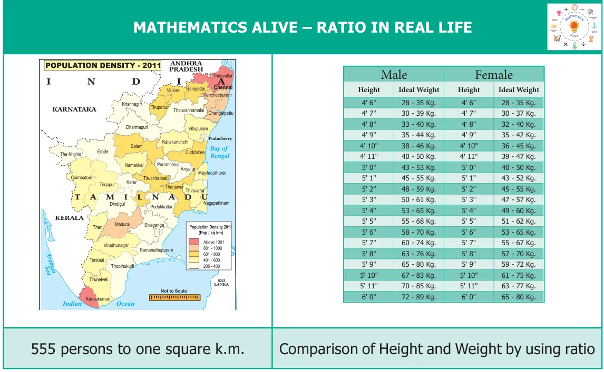

In our daily life, we handle lots of situations where we compare quantities. Comparison of our heights, weights, marks secured in examinations, speeds of vehicles, distances travelled, auto fare to taxi fare, bank balances at different periods of time and many more things are done. Comparison is usually between quantities of the same kind and not of different kind. It will not be meaningful to compare the height of a person with the age of another person. Also, we need a standard measure for comparison.
This sort of comparison by expressing one quantity as the number of times the other is called a 'Ratio'.
